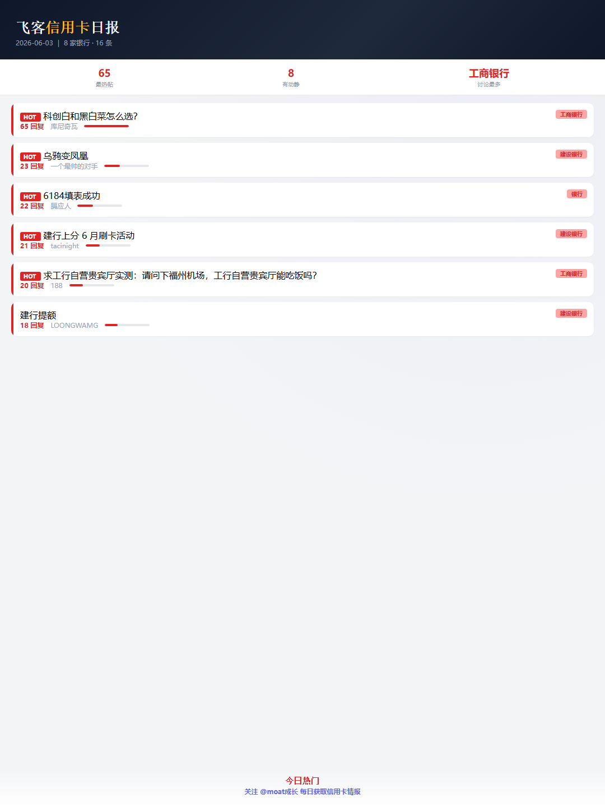
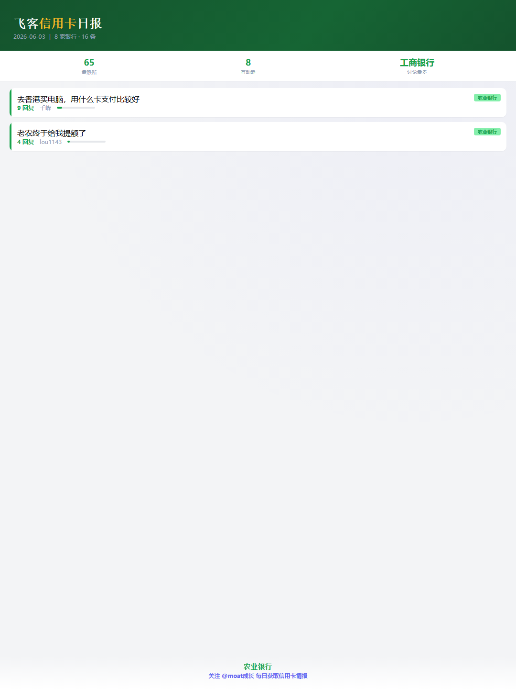
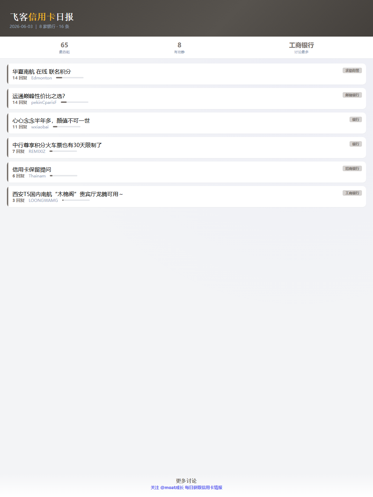
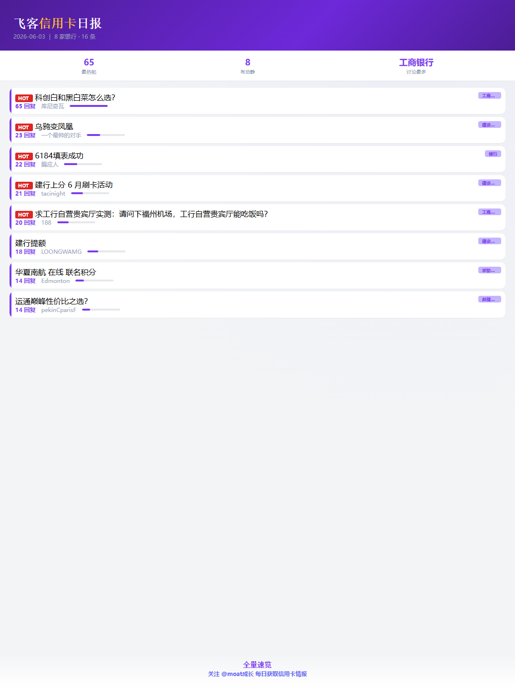
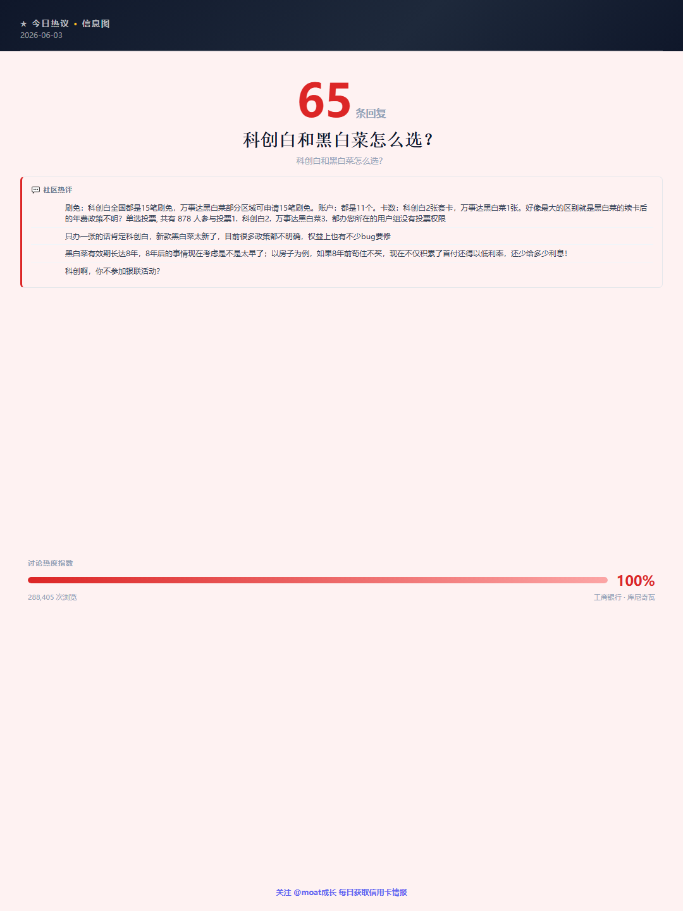

飞客晚报 | 99%人不知道的信用卡笑话
2026-06-04 · 8 条讨论
📊 今日概览 — 4 家银行共 8 条讨论，最热帖 11 条回复
✨ 今日编辑精选 · 最热帖 11 条回复
99%人不知道的信用卡笑话
信用卡经典笑话分享会
📝 建设银行定制卡号服务需付费100元，有卡友反馈「花了100块钱，我觉得还是划算」，但换号系统受限
⚠️ 今日提醒
避坑🚫 民生精英白刷免失败！避坑指南
42 条回复 · 民生电科大信用卡已出精英白没法刷免
民生卡精英白无法刷免
📝 民生银行推出电科大信用卡精英白，年费仅支持资产减免，无刷卡免年费选项。「有卡友反馈“主要是精英白没6次刷免”」，权益配置低于预期。判断：避开。 → 本周五前致电客服确认电科大精英白年费政策，再决定是否申请。
限时⏰ 5.28银行大放水！好用速关注
3 条回复 · 5.28各大银行优惠活动分享，好用关注
5.28银行优惠大全
📝 「5.28各大银行优惠活动分享，好用关注」有时效性，3 条回复说明关注度高。窗口一过就没了，符合条件的今天就上车。 → 截止日期以官方公告为准，建议6月4日内完成操作。
避坑🚫 招行百夫长被拒！原因大揭秘
49 条回复 · 招行百夫长被拒
招行百夫长信用卡被拒
📝 「招行百夫长被拒」社区 49 条讨论，踩坑反馈不少。别急着操作，先确认自身情况。 → 建议对照自身卡种和地区再决定，6月底前确认是否适用。
限时⏰ 5.27银行福利来袭！必看
3 条回复 · 5.27各大银行优惠活动分享，好用关注
5.27银行优惠大全
📝 「5.27各大银行优惠活动分享，好用关注」有时效性，3 条回复说明关注度高。窗口一过就没了，符合条件的今天就上车。 → 截止日期以官方公告为准，建议6月4日内完成操作。
限时⏰ 6.4银行优惠来袭！速抢
3 条回复 · 6.4各大银行优惠活动分享，好用关注
6.4银行优惠分享会
📝 「6.4各大银行优惠活动分享，好用关注」有时效性，3 条回复说明关注度高。窗口一过就没了，符合条件的今天就上车。 → 截止日期以官方公告为准，建议6月4日内完成操作。
🏆 前三甲详情
讨论💬 99%人不知道的信用卡笑话
11 条回复 · 讲个笑话
信用卡经典笑话分享会
📝 建设银行定制卡号服务需付费100元，有卡友反馈「花了100块钱，我觉得还是划算」，但换号系统受限。判断：谨慎，收费且灵活性低。 → 今天内登录建行APP或致电客服，核实定制卡号服务当前可用性和具体费用。
攻略📖 存多少？放多久？3万卡速批秘籍
4 条回复 · 存多少钱 放多长时间 能批3万XYK
存钱时长批3万卡攻略
📝 「存多少钱 放多长时间 能批3万XYK」操作路径清晰，4 条回复已验证可行性。按步骤来就行。 → 实操前截图保存步骤，本周内完成最佳。
讨论💬 买车能用信用卡？答案揭晓
4 条回复 · 买车可以信用卡吗
信用卡购车可行性分析
📝 「买车可以信用卡吗」4 条回复热度不低，说明这事确实纠结。核心看你的消费场景。 → 别被极端观点带偏，结合自身需求做判断。

📋 更多热帖
讨论💬 99%人不知道的信用卡笑话
11 条回复 · 讲个笑话
信用卡经典笑话分享会
📝 建设银行定制卡号服务需付费100元，有卡友反馈「花了100块钱，我觉得还是划算」，但换号系统受限。判断：谨慎，收费且灵活性低。 → 今天内登录建行APP或致电客服，核实定制卡号服务当前可用性和具体费用。
攻略📖 存多少？放多久？3万卡速批秘籍
4 条回复 · 存多少钱 放多长时间 能批3万XYK
存钱时长批3万卡攻略
📝 「存多少钱 放多长时间 能批3万XYK」操作路径清晰，4 条回复已验证可行性。按步骤来就行。 → 实操前截图保存步骤，本周内完成最佳。
讨论💬 买车能用信用卡？答案揭晓
4 条回复 · 买车可以信用卡吗
信用卡购车可行性分析
📝 「买车可以信用卡吗」4 条回复热度不低，说明这事确实纠结。核心看你的消费场景。 → 别被极端观点带偏，结合自身需求做判断。
🔥 今日热门

📂 分类精选




💬 你觉得今天哪条最有价值？评论区聊聊
关注 飞客信用卡日报
每日获取信用卡圈最新情报 · 回复「攻略」获取完整攻略
转发给需要的朋友，一起避坑省钱